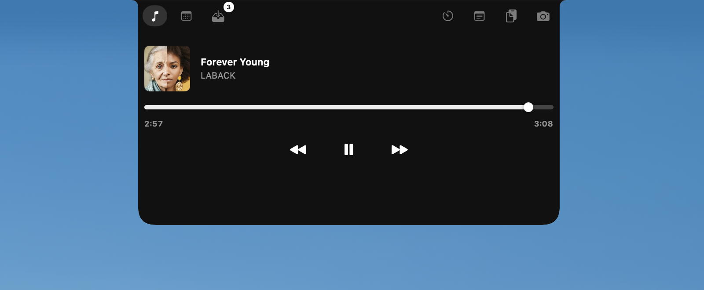
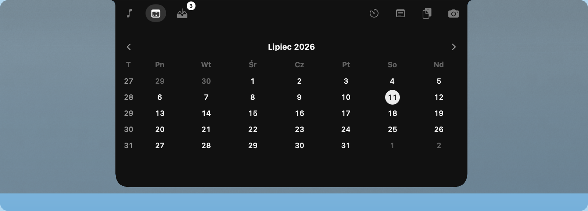
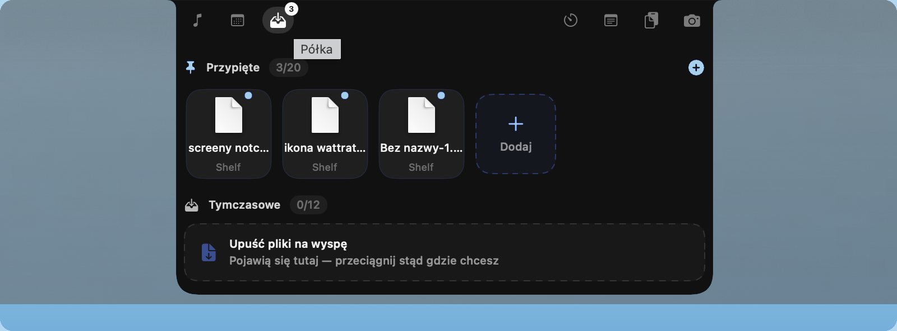
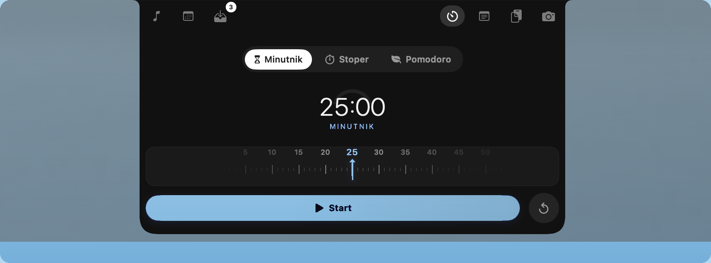
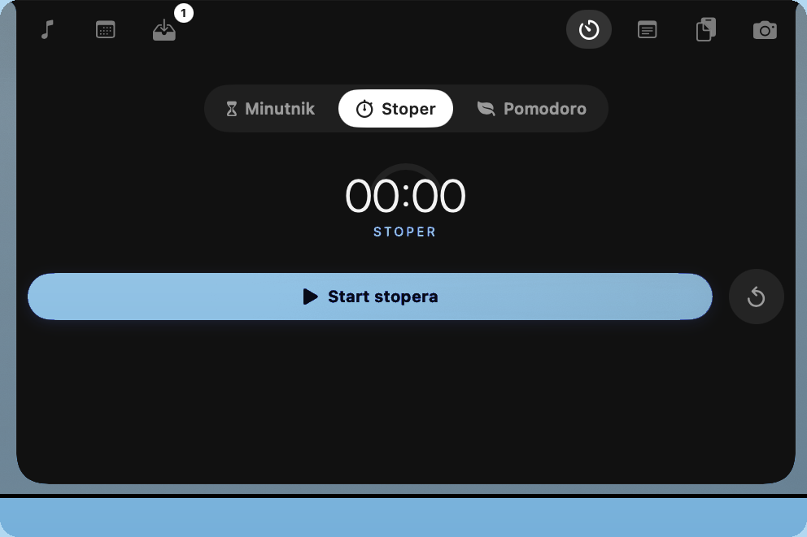
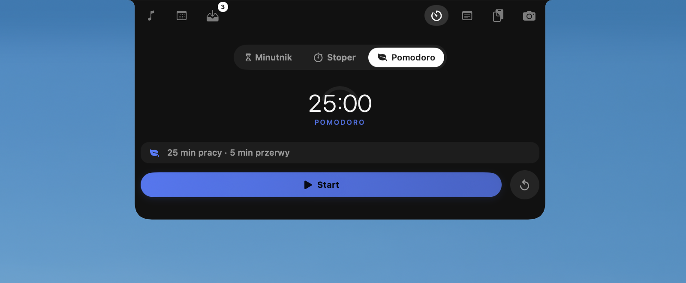
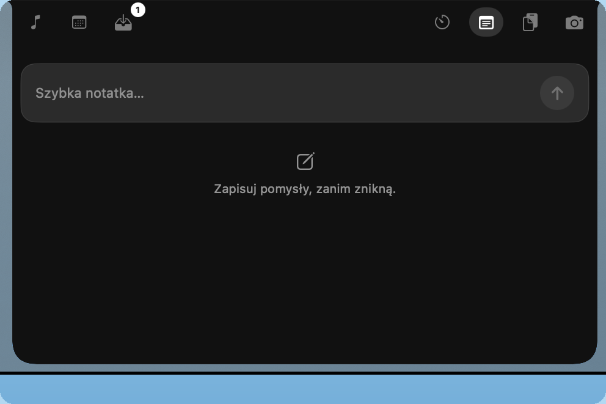
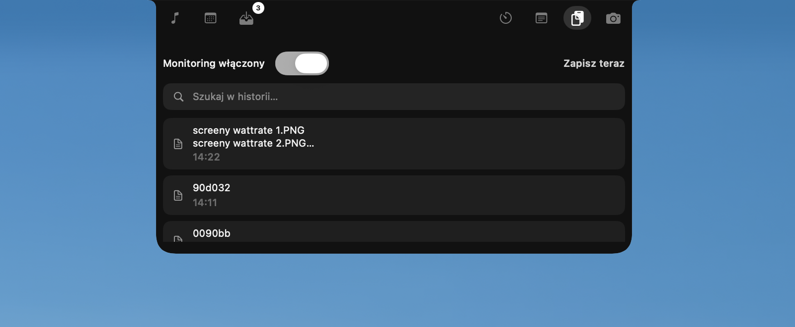
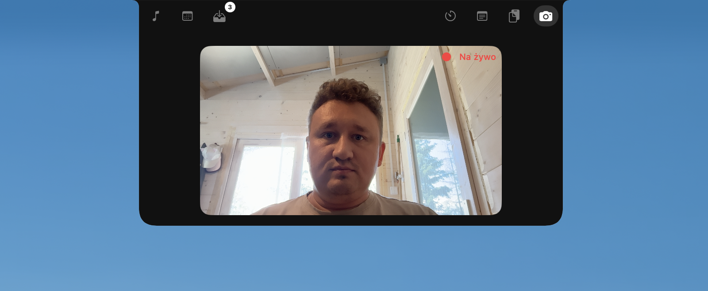

Steruj muzyką.
Forever Young
LABACK
NotchFlow zamienia niewykorzystaną przestrzeń notcha w centrum kontroli — muzyka, pliki, kalendarz, powiadomienia i więcej, dokładnie tam, gdzie ich potrzebujesz.
Muzyka, kalendarz, półka i powiadomienia w jednej wyspie. Najedź na środek górnej krawędzi ekranu, aby rozwinąć.
Wybrane aplikacje pojawiają się w notchu. Opcjonalnie: ukryj treść wiadomości i zamknij systemowy baner.
Najedź na notch. Rozwiń wyspę. Wszystko zaczyna się na górze ekranu.









NotchFlow to w 100% Swift — działa cały dzień, a Twój Mac ledwo to zauważa.
~70 MB
RAM w codziennej pracy
Mniej niż jedna karta przeglądarki — mniej więcej tyle, co Spotlight.
<2%
CPU w spoczynku
Siedzi cicho w tle, dopóki nie najedziesz na notcha.
~0
Wpływ na baterię
Przyjazny baterii przez cały dzień — do sprawdzenia w Monitorze aktywności.
100%
Natywny Swift
Bez Electrona, bez webview — czysty macOS, piksel po pikselu.
Pomiary z 14.07.2026 w Monitorze aktywności macOS — MacBook Pro (M5 Pro, 24 GB RAM, 1 TB SSD) podczas całodniowej sesji. Zużycie zależy od włączonych modułów.
Przejrzyj kod, zbuduj samodzielnie lub użyj naszych podpisanych buildów ze Sparkle.
v1.0 nic nie zbiera. Sieć tylko do walidacji licencji i aktualizacji.
Historia wyłączona domyślnie. Włącz tylko gdy potrzebujesz. Dane nie opuszczają Maca.
Integracja Raycast na 127.0.0.1. Token w Keychain.
Pełne źródła na GitHubie. Self-build uruchamia wszystkie funkcje darmowe.
Darmowe funkcje na zawsze. Premium odblokowuje personalizację i narzędzia power userów.
€0
€24 jednorazowo
€12 / rok
NotchFlow wymaga MacBooka z notchem (macOS 14+, Apple Silicon). Przy podłączonym zewnętrznym monitorze wyspa podąża za kursorem — na ekranie bez wycięcia pojawia się jako kapsuła na środku górnej krawędzi. Nie działa na Macach bez notcha (Mac mini, iMac, Mac Studio, starsze MacBooki bez wycięcia) — aplikacja nie uruchomi się i pokaże komunikat.
Nie. Wersja 1.0 nie wysyła żadnej telemetrii. Sieć jest używana wyłącznie do sprawdzania aktualizacji i walidacji licencji premium.
Tak. Kod źródłowy jest dostępny na GitHubie na licencji GPL-3.0. Self-build uruchamia wszystkie darmowe funkcje bez ograniczeń.
Personalizacja wyspy, tekst piosenki, lustro kamery, powiadomienia aplikacji w notchu, rozszerzony shelf, nieograniczone notatki i więcej. Zobacz pełne porównanie.
Przeciągnij do Aplikacji. Bez skryptów w Terminalu, bez obchodzenia kwarantanny.
Wymaga macOS 14.0 lub nowszego · Podpisane i notaryzowane · spctl -a -vv /Applications/NotchFlow.app